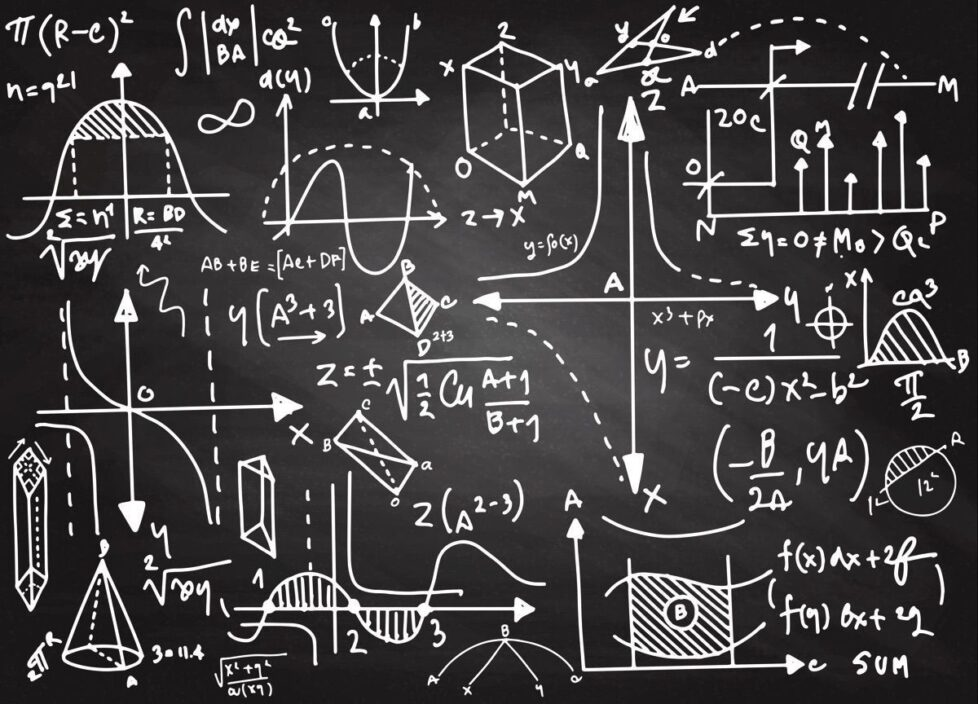
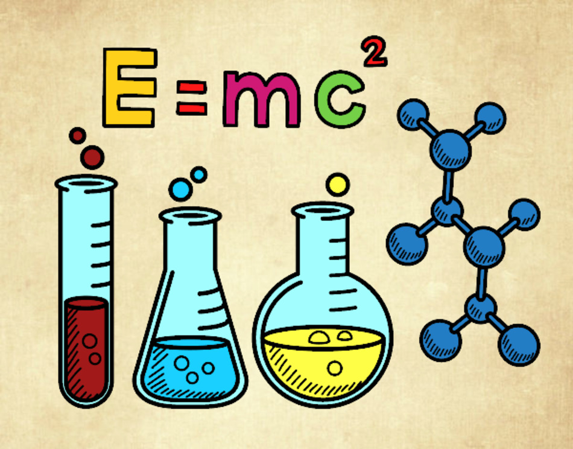

La Problemática
Al ingresar a una nueva institución académica, específicamente en el nivel medio superior,
se enfrenta un desafío significativo en términos de deserción estudiantil,
como lo señala Lilián Hernández en su artículo (2013, 13 abril) Reprobados al alza en el IPN .
Según datos proporcionados por el Instituto Politécnico Nacional (IPN),
el porcentaje de deserción en el IPN es del 28% con más de 23 mil alumnos que dejaron sus estudios
definitivamente,
lo que representa una cifra preocupante que afecta el acceso a la educación superior y el desarrollo
profesional de los jóvenes (IPN, estadísticas internas).
Las causas principales de esta problemática radican en la deficiente organización del tiempo por parte
de los estudiantes y la falta de una cultura arraigada de hábitos de estudio.
Esto conlleva a un incremento en el riesgo para el futuro académico de los jóvenes, impactando
negativamente en la acreditación de sus materias, la gestión del tiempo y su estilo de vida.

Objetivos
Objetivo general: Desarrollar un software innovador,
denominado "Guía Creativa", destinado a mejorar el
rendimiento académico de los estudiantes del CECyT 9
en las materias con alto índice de reprobación,
tales como Matemáticas, Física y Química.
.jpg)
Objetivos particulares
Implementar un software que automatice sesiones
de estudio personalizadas y eficaces,
adaptadas a las necesidades individuales de los
estudiantes del CECyT 9. Ofrecer un software que
proporcione información y recursos educativos al
mismo nivel de exigencia que el CECyT 9, garantizando
un contenido relevante y de calidad para el aprendizaje.

Objetivos particulares
Garantizar la accesibilidad y la usabilidad del software,
asegurando que sea intuitivo y fácil de usar para estudiantes de diferentes
niveles de habilidad tecnológica.
Informacion